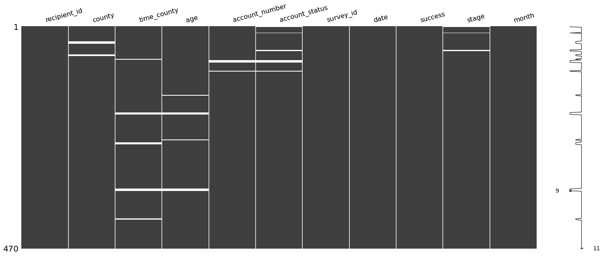
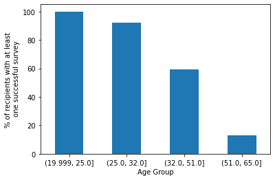
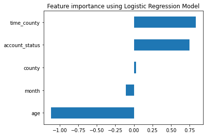
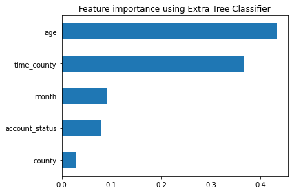

This was a take home assessment I did for GiveDirectly in June 2022. I was given 2.5 hours to complete the assignment. The csv files and instructions can be found here.
Question 1
Please evaluate the data in recipients.csv and survey_attempts.csv to answer the following questions:
How many recipients are in each of the four stages? Please provide the calculation(s) in the spreadsheet or code that you submit.
How many surveys were successfully completed in December, 2020? Please provide the calculation(s) in the spreadsheet or code that you submit.
Did you find any abnormalities in the source data? If so, how did you account for them in your analysis?
Let’s now calculate the stage variable, starting with ‘Start’.
mask = merged.groupby('recipient_id')['success'].any()one_success = [mask.index[i] for i, m inenumerate(mask) if m]# Set the value to start for those with no successful surveys. '~' negates the value # of the mask. In this case, '~' means find those without any successful surveymerged.loc[~merged.recipient_id.isin(one_success), 'stage'] ='Start'
Next, the ‘Ineligible’ stage
# Remove the text 'County' from the columnmerged.county = merged.county.str.replace('County ', '', regex=False)inABC = merged.county.isin(['A', 'B', 'C'])recipient_noABC = merged.recipient_id[~inABC]merged.loc[merged.recipient_id.isin(one_success) & merged.recipient_id.isin(recipient_noABC), 'stage'] ='Ineligible'
There are 209 in the ‘Pay’ stage, 150 in the ‘Start’, 70 ‘Ineligible’, 35 in ‘Review’, and 6 not in any stage. This is because there are 6 recipients with a missing account_status.
merged.loc[merged.stage.isna()]
recipient_id
county
time_county
age
account_number
account_status
survey_id
date
success
stage
0
r-00085
B
22.0
22.0
100000022.0
NaN
s-000342
12/23/20
True
NaN
1
r-00085
B
22.0
22.0
100000022.0
NaN
s-000448
11/25/20
False
NaN
14
r-00145
A
22.0
24.0
100000089.0
NaN
s-000137
12/21/20
True
NaN
50
r-00045
C
26.0
30.0
100000199.0
NaN
s-000161
11/25/20
False
NaN
51
r-00045
C
26.0
30.0
100000199.0
NaN
s-000236
11/15/20
False
NaN
52
r-00045
C
26.0
30.0
100000199.0
NaN
s-000337
01/14/21
True
NaN
We will impute a value for recipients with a missing account_status, but it could be worthwhile to follow up with someone for the appropriate status.
There were duplicates in the data that had to be dropped. Some values also did not make much sense and were assgined missing value. The missing data was later imputed.
merged.describe()
time_county
age
account_number
count
455.000000
460.000000
4.630000e+02
mean
19.138462
124.126087
1.000001e+08
std
10.501550
925.986058
1.074233e+02
min
-45.000000
20.000000
1.000000e+08
25%
10.000000
25.000000
1.000001e+08
50%
21.000000
32.000000
1.000001e+08
75%
28.000000
51.000000
1.000002e+08
max
35.000000
9999.000000
1.000010e+08
time_county has a minimum of -45 and age has a max of 9999. To deal with these problematic cases, I replace them with missing values to be imputed later. It could also be good to follow up with other teams on the correct value.
/tmp/ipykernel_14671/1017566221.py:1: FutureWarning: The pandas.np module is deprecated and will be removed from pandas in a future version. Import numpy directly instead.
merged.age[merged.age == 9999] = pd.np.nan
/tmp/ipykernel_14671/1017566221.py:1: SettingWithCopyWarning:
A value is trying to be set on a copy of a slice from a DataFrame
See the caveats in the documentation: https://pandas.pydata.org/pandas-docs/stable/user_guide/indexing.html#returning-a-view-versus-a-copy
merged.age[merged.age == 9999] = pd.np.nan
/tmp/ipykernel_14671/1017566221.py:2: FutureWarning: The pandas.np module is deprecated and will be removed from pandas in a future version. Import numpy directly instead.
merged.time_county[merged.time_county < 0] = pd.np.nan
/tmp/ipykernel_14671/1017566221.py:2: SettingWithCopyWarning:
A value is trying to be set on a copy of a slice from a DataFrame
See the caveats in the documentation: https://pandas.pydata.org/pandas-docs/stable/user_guide/indexing.html#returning-a-view-versus-a-copy
merged.time_county[merged.time_county < 0] = pd.np.nan
There are missing values in the data as well. Six columns have missing data.
merged.isna().sum()
recipient_id 0
county 8
time_county 20
age 14
account_number 7
account_status 13
survey_id 0
date 0
success 0
stage 6
month 0
dtype: int64
Missing data is usually deleted or imputed. Deleting missing data is easiest, but it can lead to biases if the data is not missing at random. If age is more likely to be missing in certain counties, for example, deleting missing data isn’t the best approach. If the data is missing completely at random or missing at random, it can be deleted.
If there are many missing values in a row, the row can be deleted. Likewise, if there are many missing values in a column, the column can be deleted.
Imputation can be as simple as replacing the missing value in a column with an arbitrary value such as ‘0’ or the column mean or mode. Other techniques take into account the values in other columns. Suppose a recipient has a missing age, but lives in a certain county and has also responded to the survey. Then the age might be imputed to be slightly lower because of a correlation between success and age or county and age. See more here.
We can investigate the missing data with the missingno package.
/tmp/ipykernel_14671/2359591310.py:5: UserWarning: This figure includes Axes that are not compatible with tight_layout, so results might be incorrect.
plt.tight_layout()

The white lines represent missing values. The account_number and account_status appear to have coinciding missing values, and the same for age and time_county. We can visualize these relationships with a heatmap.
There is a strong correlation between account_number and account_status being missing, which would make sense considering that someone without an account_number would not have an account_status and vice versa. There is also a strong association between age and time_county missingness.
To investigate this, let’s look at recipients with a missing time_county.
recipient_id county time_county age account_number account_status \
69 r-00070 D NaN 23.0 100000080.0 Active
70 r-00070 D NaN 23.0 100000080.0 Active
182 r-00198 B NaN NaN 100000006.0 Active
183 r-00198 B NaN NaN 100000006.0 Active
184 r-00198 B NaN NaN 100000006.0 Active
survey_id date success stage month
69 s-000252 12/08/20 True Ineligible 12
70 s-000280 11/10/20 False Ineligible 11
182 s-000284 01/07/21 False Start 01
183 s-000285 12/08/20 False Start 12
184 s-000311 12/18/20 False Start 12
recipient_id county time_county age account_number account_status \
145 r-00060 B 28.0 NaN 100000018.0 Not Active
146 r-00060 B 28.0 NaN 100000018.0 Not Active
182 r-00198 B NaN NaN 100000006.0 Active
183 r-00198 B NaN NaN 100000006.0 Active
184 r-00198 B NaN NaN 100000006.0 Active
survey_id date success stage month
145 s-000273 11/30/20 False Review 11
146 s-000455 01/29/21 True Review 01
182 s-000284 01/07/21 False Start 01
183 s-000285 12/08/20 False Start 12
184 s-000311 12/18/20 False Start 12
print(time_county_missing.recipient_id.nunique())
5
print(age_missing.recipient_id.nunique())
4
So age is usually missing when time_county is missing. There are five recipients that did not fill in their age and four that did not fill in time_county for multiple survey attempts. They may have been uncomfortable sharing that information.
Dropping these rows could lead to bias because they are not missing at random. Let’s impute the age and time_county for them. We’ll also impute the county and account_status, which are categorical variables. The imputation strategy will regress the column with missing data, say age, on other columns in the data. It will then use the regression coefficients to predict the missing values for age. More details can be found here, here, and here
Starting with the categorical columns, we’ll prepare the dataset for imputation by converting account_status and county to categorical codes.
cat_cols_na = ['account_status', 'county']merged[cat_cols_na] = merged[cat_cols_na].astype('category')d_na = {col: {n: cat for n, cat inenumerate(merged[col].cat.categories)}for col in cat_cols_na}merged[cat_cols_na] = pd.DataFrame( {col: merged[col].cat.codes for col in cat_cols_na}, index=merged.index)print(merged[cat_cols_na].head())
Now that account_status has been imputed, the stage variable can be recalculated because the six missing cases were missing because account_status was missing at the time of calculation.
Another look at which columns contain missing data shows that there is only the account_number column, which can be ignored for analysis. It also would not be appropriate to impute an identifier.
merged.isna().sum()
recipient_id 0
county 0
time_county 0
age 0
account_number 7
account_status 0
survey_id 0
date 0
success 0
stage 0
month 0
dtype: int64
Question 2
The program manager has asked for data to help determine whether the field team should focus more effort on calling those in stage Start or following up to resolve issues with those in stage Review. Please write a response to the program manager, including data that may help inform the decision, and some additional factors that you would take into consideration to make the decision. Assume that the program manager’s expertise does not include interpreting data and complex analytics. Please limit your written response to 300 words or less.
It would not make sense to calculate the chance of someone having a successful survey based on the stage variable because the ‘Start’ group would have no successful surveys, and the other three groups would have all recipients with at least one successful survey. On the other hand, it would be good to know the chances of someone moving from the ‘Review’ stage to a ‘Pay’ stage at a later date, for example.
# Check how many recipients have more than one stage(merged.groupby('recipient_id')['stage'].nunique() >1).sum()
0
There do not appear to be recipients that have changed their stage. Let’s check for recipients that have changed from ‘Not Active’ to ‘Active’ account_status.
No recipients have changed from ‘Not Active’ to ‘Active’ account_status either.
One thing to consider is that the ‘Start’ group has 150 recipients compared to only 35 in the ‘Review’ group. The ‘Start’ group success rate only needs to be 35/150 ~ 23% to match a 100% success rate in the ‘Review’ group. It would be good to look up historical data on the conversion rate from ‘Start’ to ‘Pay’ versus ‘Review’ to ‘Pay’. Data on the cost of converting the ‘Start’ group versus the ‘Review’ group would also be helpful for the decision.
The country director is considering investing resources into proactively conducting in-person surveys with recipients in the highest age group across projects to increase overall survey success rate. They believe that this additional cost might outweigh the current costs of repeated failed phone survey attempts, if we can accurately target those recipients least likely to respond to a phone survey.
What analysis would you provide from the provided project data to help make this decision? Please provide the calculation(s) in the spreadsheet or code that you submit.
Are there other factors that might explain the observed survey success rate from this project? Please use your judgment to determine these factors and limit your written response to 400 words or less.
3.1
Let’s graph the relationship between age and at least one successful survey.
%matplotlib inlinemerged['one_success'] =0merged.loc[merged.recipient_id.isin(one_success), 'one_success'] =1# Create bins for age broken into quartilesmerged['age_bin'] = pd.qcut(merged.age, q=4)age_success = merged.groupby('age_bin')['one_success'].sum()age = merged.groupby('age_bin')['one_success'].count()results = age_success.div(age, level='age_bin') *100results.plot(kind='bar')plt.xticks(rotation=0)plt.xlabel('Age Group')plt.ylabel('% of recipients with at least\n one successful survey')plt.show()

People in the highest age group are the least likely to have at least one successful survey.
There is a negative relationship between age and the chance of at least one successful survey. The coefficient is also statistically significant. To interpret it, we calculate the odds ratio.
OR Lower CI Upper CI
Intercept 2518.096539 755.093254 8397.386877
age 0.840278 0.817312 0.863888
-15.97
/tmp/ipykernel_14671/4211037893.py:7: FutureWarning: The pandas.np module is deprecated and will be removed from pandas in a future version. Import numpy directly instead.
odds_ratios = pd.np.exp(odds_ratios)
Each additional increase of one year in age is associated with a roughly 16 percent decrease in odds of having at least one successful survey.
So far, it appears that older recipients are less likely to respond to surveys. Focusing on the older recipients would help target those with lower response rates.
3.2
We include other variables in our logistic regression to check for confounders.
Warning: Maximum number of iterations has been exceeded.
Current function value: 0.074409
Iterations: 35
Logit Regression Results
==============================================================================
Dep. Variable: one_success No. Observations: 470
Model: Logit Df Residuals: 464
Method: MLE Df Model: 5
Date: Wed, 08 Jun 2022 Pseudo R-squ.: 0.8812
Time: 13:10:08 Log-Likelihood: -34.972
converged: False LL-Null: -294.33
Covariance Type: nonrobust LLR p-value: 7.306e-110
===================================================================================================
coef std err z P>|z| [0.025 0.975]
---------------------------------------------------------------------------------------------------
Intercept 10.2072 2.959 3.449 0.001 4.407 16.007
C(month)[T.11] 24.6815 8.53e+04 0.000 1.000 -1.67e+05 1.67e+05
C(month)[T.12] -0.3861 0.670 -0.576 0.564 -1.699 0.927
C(account_status)[T.Not Active] 30.8016 4900.380 0.006 0.995 -9573.767 9635.370
time_county 0.1367 0.069 1.967 0.049 0.001 0.273
age -0.3718 0.093 -4.019 0.000 -0.553 -0.190
===================================================================================================
Possibly complete quasi-separation: A fraction 0.54 of observations can be
perfectly predicted. This might indicate that there is complete
quasi-separation. In this case some parameters will not be identified.
/home/dylan/give-directly-exercise/.venv/lib/python3.8/site-packages/statsmodels/base/model.py:604: ConvergenceWarning: Maximum Likelihood optimization failed to converge. Check mle_retvals
warnings.warn("Maximum Likelihood optimization failed to "
When time_county, month, and account_status are included along with age, age and time_county are still significant predictors. We can also look at other feature selection methods.
Logistic regression can also be used to select features based on their importance in predicting at least one successful survey.
Best accuracy score using built-in LogisticRegCV: 0.992908

It appears that the account_status and age have the largest effect on whether a survey is successful. age has a negative effect however. Recall that account_status and age are correlated.
merged.groupby('account_status')['age'].mean()
account_status
Active 36.535321
Not Active 46.908571
Name: age, dtype: float64
The ‘Not Active’ group is slightly older. A test of the equality of group means can confirm this. The null hypothesis is that the means are equal.
The p-value is close to zero, rejecting the null hypothesis that the means of the two groups are equal. So there is a statistically significant difference between the ages of ‘Active’ and ‘Not Active’ recipients.
Let’s now use a tree-based classifier for comparison.
reg_extra_tree = ExtraTreesClassifier(n_estimators=10)reg_extra_tree.fit(X_train, y_train)feat_imp = pd.Series( reg_extra_tree.feature_importances_, index=X.columns).sort_values()print(f"Mean accuracy on test data is {reg_extra_tree.score(X_test, y_test)}")feat_imp.plot(kind="barh")plt.title("Feature importance using Extra Tree Classifier")plt.tight_layout()plt.show()
Mean accuracy on test data is 1.0

This time the model has age as the most important effect, with time_county as a close second. All of the features are chosen by the model, however. Note that there is randomness in the model, so sometimes the features will be ranked differently across different runs. But the model will still choose features important for prediction.